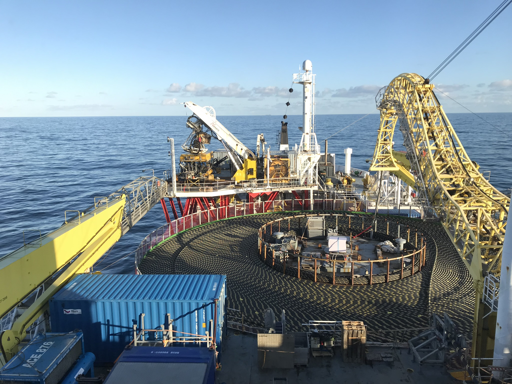

Lange AC- og DC-kabelsystemer
Høyspent sjøkabler og jordkabler, kabelanlegg i broer og tunneler, landfall og nettilknytning.

Elkraftrådgivning og prosjektering

-Erfaren prosjektledelse og spesialisert rådgivning for komplekse kraft- og kabelprosjekter.
RUDCON AS leverer erfaren prosjektledelse og spesialisert rådgivning for komplekse kraft- og kabelprosjekter. Vi bistår kunder fra tidligfase og kontraktstrategi til bygging, testing og idriftsettelse.
RUDCON AS bygger på mer enn 20 års erfaring fra kraftbransjen og har særlig kompetanse innen høyspent sjøkabel, jordkabel, nettforsterkning, stasjonsprosjekter og prosjektgjennomføring. Selskapet kombinerer tung teknisk innsikt med praktisk erfaring fra store prosjekter i Norge, Europa og Afrika.

Høyspent sjøkabler og jordkabler, kabelanlegg i broer og tunneler, landfall og nettilknytning.
Stasjonsprosjekter, transformatorstasjoner og nettforsterkning for kraftdistribusjon.
Havvind, industri, hydrogen/ammoniakk og store transmisjonsprosjekter fra lavspent til 600 kV.
Prosjektledelse, engineering management, tilbuds- og kontraktsgrunnlag, leverandøroppfølging og idriftsettelse.
Gjennomføringsstrategi, tekniske avklaringer, tilbudsevaluering og kontraktsforhandlinger.
Erfaring fra store prosjekter i Norge, Europa og Afrika innen alle elektrokraftfelt.
Prosjekteringsledelse for 132 kV kraftforsyning til Undheim Datasenter. Rolle: Prosjekteringsledelse og kabelteknisk ekspert i integrert Norconsults prosjektteam.
Les mer →Byggefase for HVDC-forbindelsen mellom Norge og Tyskland. Ca. 550 km ledning med oppfølging av alle aspekter fra kabel til stasjon.
Les mer →Engineering management og kabelteknisk oppfølging. 9 parallelle kabler, ca. 13 km. Representasjon om bord på installasjonsfartøy.
Les mer →E-post: frode.rudolfsen@rudcon.no
Telefon: +47 482 70 233
Adresse: Strandgaten 38, 4400 Flekkefjord